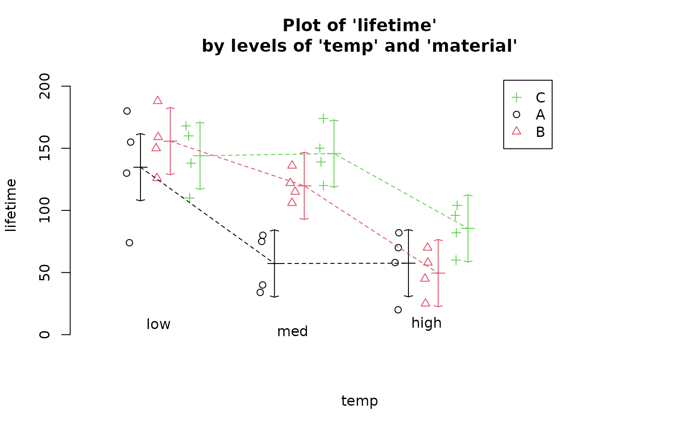
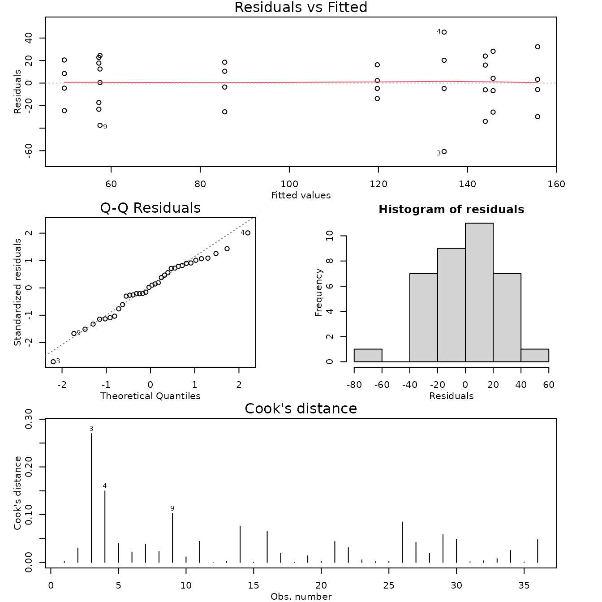

Case Study 12.4: STATS 201/8 Extra Case Study - Twoway ANOVA Model, Interaction
Source:vignettes/articles/CS12_4.Rmd
CS12_4.RmdQuestion 1
Researchers were interested in which of three types of material for producing batteries lead to the longest effective battery life. They wanted a recommendation for which material (if any) performed better at each of three different temperatures and wanted to know if the temperature performance was the same for the three types of material used.
Note: The researchers were NOT interested in the differences in performance of the batteries made of the same material between the three different temperatures at this time.
36 batteries were made, 12 each from the three different materials available. They were then randomly allocated to one of three temperatures. The batteries were then tested using a standardised testing procedure under their allocated temperature to measure the effective life of the battery.
The resulting data are in the file Batteries.csv, which contains the variables:
| Variable | Description |
|---|---|
| lifetime | The effective lifetime of the battery (hours). |
| material | The material the battery was made of (coded as A, B or C). |
| temp | The temperature the battery was tested at (low, med or high). |
Instructions:
- Comment on the interaction plot of the data.
- Fit an appropriate linear model to answer the questions of interest and check its assumptions. Determine whether the model can be simplified to decide on an appropriate final model. Generate the inference output you need from the final model.
- Write a Method and Assumption Checks section.
- Write an Executive Summary. Remember to answer the researchers questions, including recommendations. Only focus on what is requested.
Question of interest/goal of the study
Researchers were interested in which of three types of material for producing batteries lead to the longest effective battery life at each of three different temperatures and wanted to know if the temperature performance was the same for the three types of material used.
Read in and inspect the data
Batteries.df = read.csv("Batteries.csv", stringsAsFactors = TRUE)
interactionPlots(lifetime ~ temp + material, data = Batteries.df)
Comment on the plot.
The plots don’t appear to be parallel suggesting the will be interaction. At both high and low temperature there doesn’t seem to be much difference in battery life between the three materials. However at medium temperature, Material A seems to have a lower lifetime than the others.
Fit model, simplify as necessary, and generate inference output
battery.fit = lm(lifetime ~ temp * material, data = Batteries.df)
modelcheck(battery.fit)
anova(battery.fit)## Analysis of Variance Table
##
## Response: lifetime
## Df Sum Sq Mean Sq F value Pr(>F)
## temp 2 39119 19559.4 28.9677 1.909e-07 ***
## material 2 10684 5341.9 7.9114 0.001976 **
## temp:material 4 9614 2403.4 3.5595 0.018611 *
## Residuals 27 18231 675.2
## ---
## Signif. codes: 0 '***' 0.001 '**' 0.01 '*' 0.05 '.' 0.1 ' ' 1
summary(battery.fit)##
## Call:
## lm(formula = lifetime ~ temp * material, data = Batteries.df)
##
## Residuals:
## Min 1Q Median 3Q Max
## -60.750 -14.625 1.375 17.937 45.250
##
## Coefficients:
## Estimate Std. Error t value Pr(>|t|)
## (Intercept) 57.50 12.99 4.426 0.000142 ***
## templow 77.25 18.37 4.204 0.000257 ***
## tempmed -0.25 18.37 -0.014 0.989244
## materialB -8.00 18.37 -0.435 0.666736
## materialC 28.00 18.37 1.524 0.139165
## templow:materialB 29.00 25.98 1.116 0.274242
## tempmed:materialB 70.50 25.98 2.713 0.011461 *
## templow:materialC -18.75 25.98 -0.722 0.476759
## tempmed:materialC 60.50 25.98 2.328 0.027632 *
## ---
## Signif. codes: 0 '***' 0.001 '**' 0.01 '*' 0.05 '.' 0.1 ' ' 1
##
## Residual standard error: 25.98 on 27 degrees of freedom
## Multiple R-squared: 0.7652, Adjusted R-squared: 0.6956
## F-statistic: 11 on 8 and 27 DF, p-value: 9.426e-07
battery.pairs <- pairs(emmeans(battery.fit, ~ temp * material), infer = TRUE)
displayPairs(battery.pairs, c("low", "med", "high"), c("A", "B", "C"))## Note: displayPairs is a s20x function that displays only the within-level
## comparisons from allpairs. To see all comparisons, inspect the allpairs
## output directly.
##
## $low
## contrast est lwr upr pval
## low A - low B -21.00 -82.82318 40.82318 0.9616404
## low A - low C -9.25 -71.07318 52.57318 0.9998527
## low B - low C 11.75 -50.07318 73.57318 0.9991463
##
## $med
## contrast est lwr upr pval
## med A - med B -62.5 -124.32318 -0.676816 0.046038781
## med A - med C -88.5 -150.32318 -26.676816 0.001417257
## med B - med C -26.0 -87.82318 35.823184 0.882288139
##
## $high
## contrast est lwr upr pval
## high A - high B 8 -53.82318 69.82318 0.9999508
## high A - high C -28 -89.82318 33.82318 0.8347331
## high B - high C -36 -97.82318 25.82318 0.5819453
##
## $A
## contrast est lwr upr pval
## high A - low A -77.25 -139.07318 -15.42682 0.006747114
## high A - med A 0.25 -61.57318 62.07318 1.000000000
## low A - med A 77.50 15.67682 139.32318 0.006521215
##
## $B
## contrast est lwr upr pval
## high B - low B -106.25 -168.07318 -44.426816 0.0001151507
## high B - med B -70.25 -132.07318 -8.426816 0.0172076171
## low B - med B 36.00 -25.82318 97.823184 0.5819453144
##
## $C
## contrast est lwr upr pval
## high C - low C -58.50 -120.32318 3.323184 0.0742711
## high C - med C -60.25 -122.07318 1.573184 0.0604247
## low C - med C -1.75 -63.57318 60.073184 1.0000000Methods and assumption checks
As we have two explanatory factors, we fitted a two-way ANOVA model with interactions. After fitting the model the residuals look good, there are no major problems with normality or overly influential observations. We should have independence due to the experimental design. There is reasonably strong evidence suggesting there is an interaction between temperature and material, and thus we keep the interaction term in the model.
Our model is: model: ,
where if the battery was tested at low temperature , and 0 otherwise; … and
Alternatively, our model is: ,
where is the overall mean lifetime, is the effect due to the temperature, , is the effect due to the material, , is the effect due to the temperature and material combination.
Our model explains about 77% of variation in the lifetimes.
Executive Summary
Researchers were interested in which of three types of material for producing batteries lead to the longest effective battery life at each of three different temperatures and wanted to know if the temperature performance was the same for the three types of material used.
We found evidence that the effects of material on battery life did depend on the temperature.
At both low temperatures and high temperatures there was no evidence of any difference in performance between the three types of material.
However, at medium temperature, batteries made from material A performed worse than batteries made from material B or C. We could not find any evidence of a better performer between batteries made from materials B or C.
At medium temperature, we estimate batteries made from material A had a lifetime that was, on average, between:
1 and 124 hours lower than that of batteries made with material B.
27 and 150 hours lower than that of batteries made with material C.
Overall, it doesn’t appear to matter which material is used at low or high temperatures, but at medium temperatures (probably the most important) all we can do is rule out material A, so we are left with either material B or C.